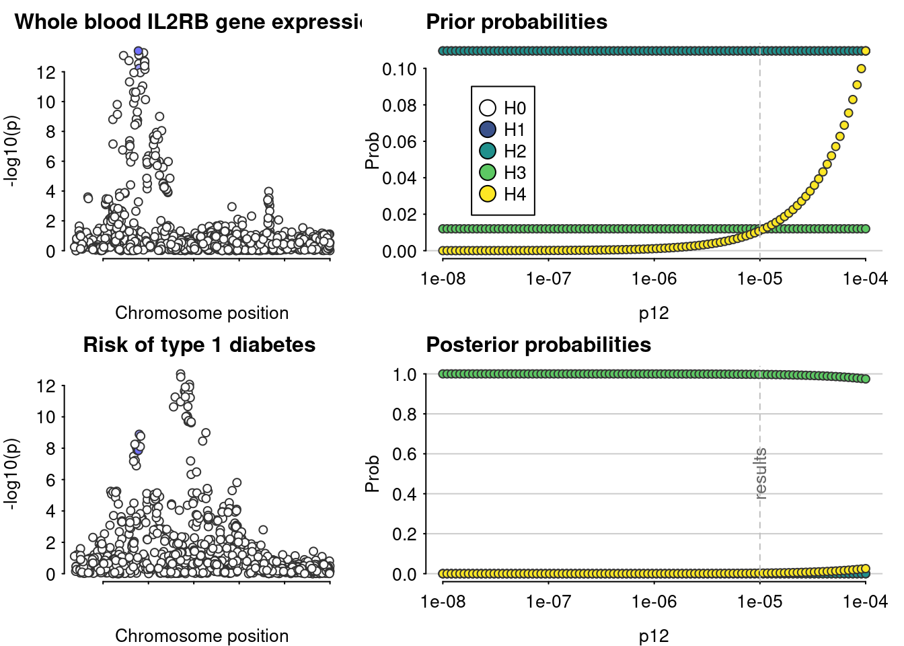
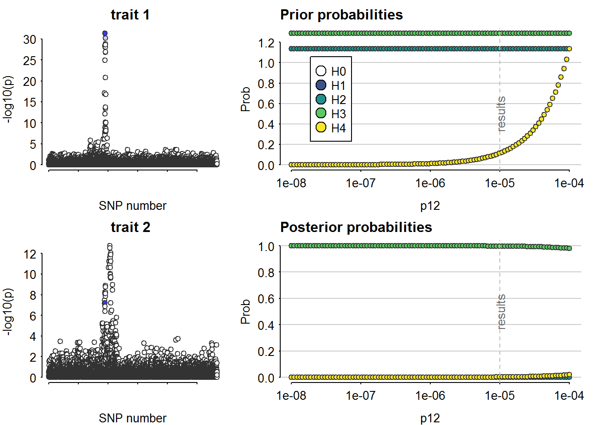
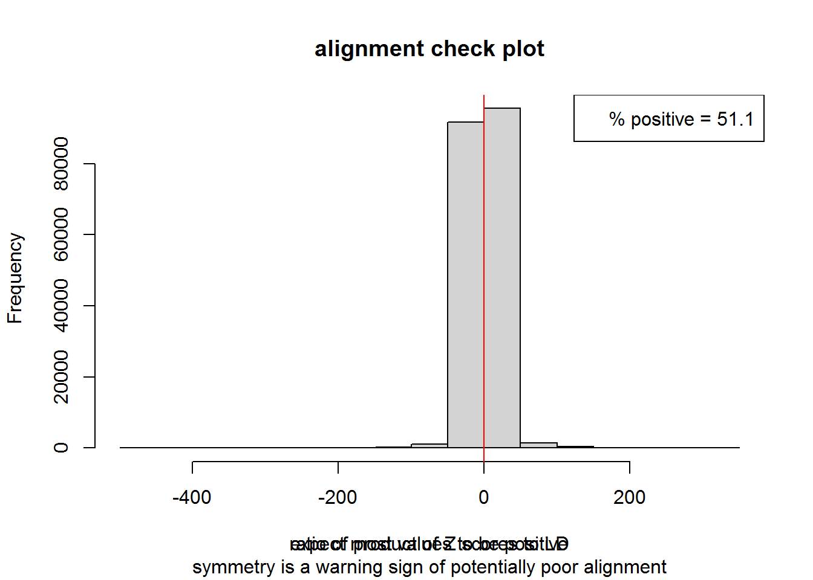
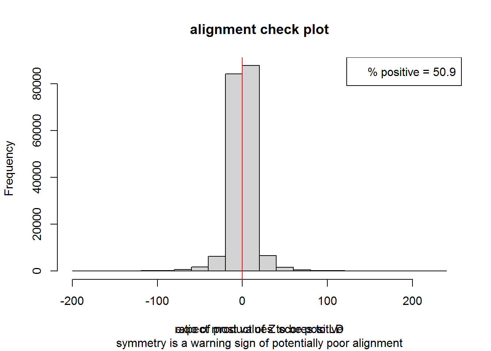
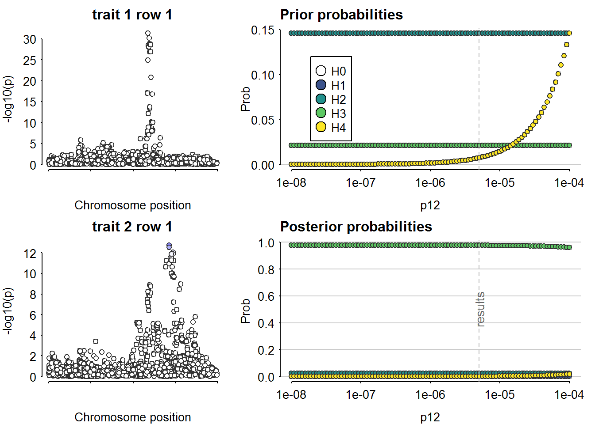
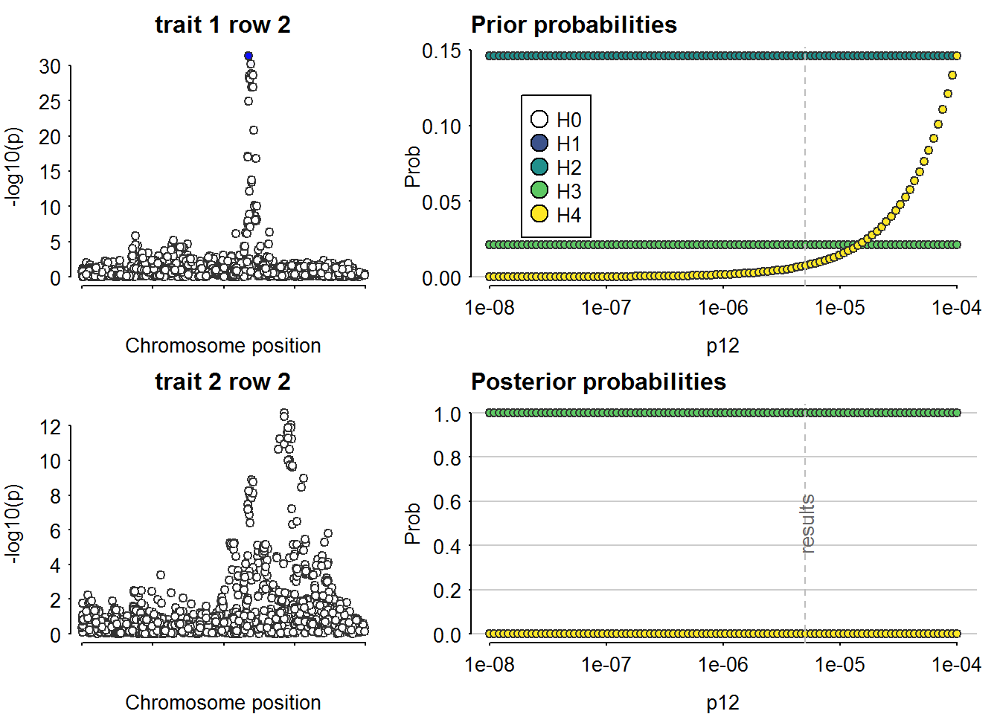
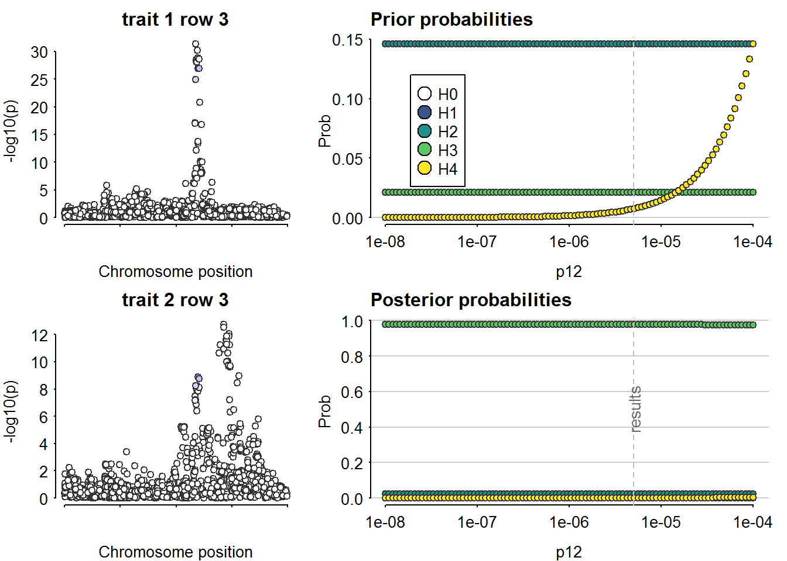
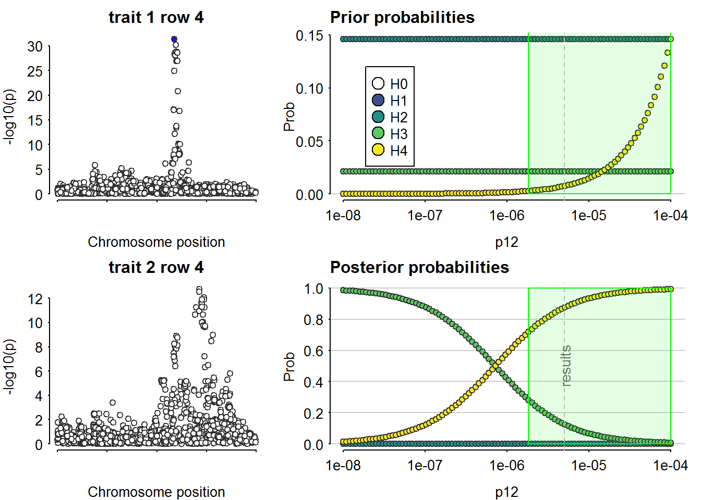

Last updated: 2023-05-04
Checks: 7 0
Knit directory: T1DSCREEN/
This reproducible R Markdown analysis was created with workflowr (version 1.7.0). The Checks tab describes the reproducibility checks that were applied when the results were created. The Past versions tab lists the development history.
Great! Since the R Markdown file has been committed to the Git repository, you know the exact version of the code that produced these results.
Great job! The global environment was empty. Objects defined in the global environment can affect the analysis in your R Markdown file in unknown ways. For reproduciblity it’s best to always run the code in an empty environment.
The command set.seed(20220313) was run prior to running
the code in the R Markdown file. Setting a seed ensures that any results
that rely on randomness, e.g. subsampling or permutations, are
reproducible.
Great job! Recording the operating system, R version, and package versions is critical for reproducibility.
Nice! There were no cached chunks for this analysis, so you can be confident that you successfully produced the results during this run.
Great job! Using relative paths to the files within your workflowr project makes it easier to run your code on other machines.
Great! You are using Git for version control. Tracking code development and connecting the code version to the results is critical for reproducibility.
The results in this page were generated with repository version 725b02d. See the Past versions tab to see a history of the changes made to the R Markdown and HTML files.
Note that you need to be careful to ensure that all relevant files for
the analysis have been committed to Git prior to generating the results
(you can use wflow_publish or
wflow_git_commit). workflowr only checks the R Markdown
file, but you know if there are other scripts or data files that it
depends on. Below is the status of the Git repository when the results
were generated:
Ignored files:
Ignored: .Rhistory
Ignored: .Rproj.user/
Ignored: data/README_cis_eqtl.txt
Ignored: data/README_cis_eqtl_AF.txt
Ignored: data/cis-EQTL-AF.txt
Ignored: data/cis_sumstats/2018-07-18_SNP_AF_for_AlleleB_combined_allele_counts_and_MAF_pos_added.txt
Ignored: refs/
Untracked files:
Untracked: data/cis_eqtl_sumstats/
Untracked: data/cis_sumstats/JAK1_T1D.rds
Untracked: data/cis_sumstats/JAK3_T1D.rds
Untracked: data/export/IFNAR2_eqtl_TwoSampleMR.csv
Untracked: data/export/IL2RA_eqtl_TwoSampleMR.csv
Untracked: data/export/IL2RB_eqtl_TwoSampleMR.csv
Untracked: data/export/IL2RG_eqtl_TwoSampleMR.csv
Untracked: data/export/IL6R_eqtl_TwoSampleMR.csv
Untracked: data/export/JAK1_T1D_TwoSampleMR.csv
Untracked: data/export/JAK1_eqtl_TwoSampleMR.csv
Untracked: data/export/JAK2_eqtl_TwoSampleMR.csv
Untracked: data/export/JAK3_T1D_TwoSampleMR.csv
Untracked: data/export/JAK3_eqtl_TwoSampleMR.csv
Untracked: data/export/TYK2_eqtl_TwoSampleMR.csv
Note that any generated files, e.g. HTML, png, CSS, etc., are not included in this status report because it is ok for generated content to have uncommitted changes.
These are the previous versions of the repository in which changes were
made to the R Markdown (analyses/IL2RB.Rmd) and HTML
(docs/IL2RB.html) files. If you’ve configured a remote Git
repository (see ?wflow_git_remote), click on the hyperlinks
in the table below to view the files as they were in that past version.
| File | Version | Author | Date | Message |
|---|---|---|---|---|
| Rmd | 725b02d | jkoskenniemi | 2023-05-04 | wflow_publish(all = TRUE, republish = TRUE) |
| html | 725b02d | jkoskenniemi | 2023-05-04 | wflow_publish(all = TRUE, republish = TRUE) |
| html | 4ea0ac9 | jkoskenniemi | 2023-05-03 | Build site. |
| Rmd | 9ee30ea | jkoskenniemi | 2023-05-03 | Added eQTL data, corrected an error in coloc sensitivity figures |
| html | e0d3987 | jkoskenniemi | 2023-04-28 | Build site. |
| html | c8d146f | Jaakko Koskenniemi | 2023-04-26 | Build site. |
| html | 57ee62a | Jaakko Koskenniemi | 2023-04-25 | Build site. |
| Rmd | 2c387a1 | Jaakko Koskenniemi | 2023-04-25 | First commit |
| html | 24d77f3 | Jaakko Koskenniemi | 2022-11-05 | Build site. |
| Rmd | e86595d | Jaakko Koskenniemi | 2022-11-05 | wflow_publish(c("analyses/CRP.Rmd", "analyses/CXCL10.Rmd", "analyses/IL2RA.Rmd", |
Load packages and import data
library(tidyverse)-- Attaching packages --------------------------------------- tidyverse 1.3.1 --v ggplot2 3.4.1 v purrr 0.3.4
v tibble 3.1.7 v dplyr 1.0.9
v tidyr 1.2.0 v stringr 1.4.0
v readr 2.1.2 v forcats 0.5.1Warning: package 'ggplot2' was built under R version 4.2.2-- Conflicts ------------------------------------------ tidyverse_conflicts() --
x dplyr::filter() masks stats::filter()
x dplyr::lag() masks stats::lag()library(data.table)
Attaching package: 'data.table'The following objects are masked from 'package:dplyr':
between, first, lastThe following object is masked from 'package:purrr':
transposelibrary(coloc)This is a new update to coloc.library(TwoSampleMR)TwoSampleMR version 0.5.6
[>] New: Option to use non-European LD reference panels for clumping etc
[>] Some studies temporarily quarantined to verify effect allele
[>] See news(package='TwoSampleMR') and https://gwas.mrcieu.ac.uk for further detailslibrary(ggpubr)
library(ieugwasr)API: public: http://gwas-api.mrcieu.ac.uk/
Attaching package: 'ieugwasr'The following object is masked from 'package:TwoSampleMR':
ld_matrixlibrary(rio)Warning: package 'rio' was built under R version 4.2.2library(here)Warning: package 'here' was built under R version 4.2.2here() starts at C:/Users/jajoko/Documents/T1DSCREENhere::i_am("analyses/IL2RB.Rmd")here() starts at C:/Users/jajoko/Documents/T1DSCREENIL2RB_eqtl <- read_exposure_data("data/export/IL2RB_eqtl_TwoSampleMR.csv", sep=",")Warning in format_data(as.data.frame(exposure_dat), type = "exposure", snps =
NULL, : se column is not numeric. Coercing...Warning in format_data(as.data.frame(exposure_dat), type = "exposure", snps = NULL, : The following SNP(s) are missing required information for the MR tests and will be excluded
rs228960
rs1833448
rs2281094
rs16997734
rs1003693
rs228942
rs228973
rs3218264
rs228974
rs2281093
rs1003694
rs3218266
rs228963
rs228975
rs1003692
rs228965
rs3218313
rs84458
rs2235330
rs228966
rs3218315
rs760720
rs228953
rs2284034
rs228951
rs11703065
rs228957
rs80306725
rs2051582
rs228955
rs2092169
rs2284033
rs228958
rs228954
rs2543537
rs229492
rs229484
rs9622555
rs743777
rs4821591
rs743779
rs9607418
rs228944
rs1861947
rs84459
rs743776
rs84460
rs9607414
rs229483
rs228941
rs2016771
rs929022
rs144921819
rs228945
rs3218358
rs228978
rs743778
rs229489
rs1034417
rs5995388
rs228947
rs3218255
rs5995389
rs3218251
rs3218253
rs963621
rs5756531
rs4821592
rs5756533
rs3218258
rs12171227
rs3218252
rs16997854
rs228946
rs62235062
rs62235060
rs77383486
rs2284035
rs4821593
rs36124857
rs3213557
rs12167923
rs12167757
rs5995385
rs5750383
rs228931
rs5756527
rs6000570
rs4821587
rs5995410
rs9607411
rs5756516
rs932325
rs5756515
rs6000649
rs180772081
rs5995411
rs3218288
rs3213555
rs5756587
rs4140590
rs2235329
rs4140589
rs71328611
rs5750404
rs12170939
rs117160285
rs7285814
rs55816447
rs5756520
rs7290003
rs59529694
rs5756519
rs73406910
rs142148459
rs117792241
rs228919
rs6000829
rs12168426
rs228920
rs16996672
rs228935
rs5750405
rs5756480
rs138497248
rs3218299
rs228936
rs151233481
rs7290615
rs228922
rs59788868
rs5995382
rs228921
rs139208767
rs113311038
rs188301992
rs1961437
rs59965755
rs16996677
rs228929
rs56912861
rs78618063
rs8139559
rs228928
rs73413722
rs9607404
rs12160320
rs55726156
rs150513499
rs45458700
rs762989
rs113978793
rs228918
rs5995384
rs11912413
rs73420367
rs130442
rs8139083
rs16998227
rs35277000
rs13055131
rs228924
rs7287594
rs73168260
rs9619707
rs9622546
rs3959633
rs6519078
rs7510976
rs12170813
rs742147
rs9306321
rs142355582
rs112147224
rs9622650
rs28450477
rs73405793
rs228914
rs11914132
rs56335440
rs12171043
rs8141057
rs10212058
rs6519012
rs4331612
rs5756768
rs5750345
rs112561699
rs147830041
rs11705648
rs4821686
rs12167289
rs58489539
rs111311629
rs228917
rs147627184
rs1041895
rs41283217
rs57804049
rs877166
rs16996838
rs16996836
rs12168819
rs228916
rs61184557
rs144009759
rs138390027
rs183177135
rs10212068
rs11704269
rs2284040
rs74839029
rs4820266
rs4764
rs78574914
rs115067778
rs140588660
rs16996674
rs11089823
rs75932490
rs1468074
rs11089824
rs10427757
rs11912139
rs11912881
rs148043637
rs5995431
rs5756766
rs145302768
rs60296118
rs16996668
rs55670830
rs5756782
rs116069987
rs1468073
rs113528297
rs16997517
rs67843390
rs12168564
rs11705401
rs80210934
rs73164599
rs147963126
rs117175702
rs12484031
rs9607400
rs228934
rs228925
rs188002303
rs5756481
rs742149
rs2187723
rs10427747
rs73414270
rs7510931
rs9619708
rs5756767
rs1468075
rs1468072
rs9610613
rs59744498
rs10427722
rs228910
rs9610634
rs7286269
rs12168576
rs2251437
rs13433599
rs78577305
rs111869862
rs4821580
rs4821579
rs78029853
rs5756483
rs117237392
rs5750472
rs111965320
rs4821553
rs4820267
rs139800412
rs79149870
rs12169148
rs4264658
rs62229117
rs77946619
rs5756456
rs5756489
rs55955949
rs9610617
rs3218361
rs5750540
rs5756764
rs727047
rs41304667
rs6000863
rs184921242
rs5756453
rs188826046
rs78313783
rs12165752
rs12158179
rs139239027
rs59942142
rs141014201
rs739028
rs148688873
rs78500845
rs190613114
rs13055233
rs5756450
rs62229094
rs4821585
rs41297247
rs191313644
rs113774168
rs183324756
rs5756781
rs147482364
rs762990
rs5995372
rs76143867
rs11703148
rs4821581
rs56013331
rs9610651
rs9622621
rs16997510
rs117511880
rs5750473
rs7288891
rs73405714
rs117829878
rs115691961
rs12166106
rs5756491
rs4821578
rs713829
rs56181145
rs9622407
rs5750339
rs6519043
rs148247654
rs6000523
rs62230766
rs9610623
rs5756523
rs2284043
rs75169631
rs11089831
rs6000522
rs2032476
rs5756487
rs11570760
rs117936598
rs9610626
rs9610625
rs1801114
rs4239883
rs1034418
rs12169710
rs12169707
rs9610616
rs2160907
rs75704354
rs9610624
rs62229127
rs3817802
rs115103799
rs12166968
rs140059506
rs35851175
rs3753143
rs13055107
rs9622644
rs73409439
rs228912
rs28614056
rs55970640
rs2239774
rs139145112
rs9622584
rs6000813
rs6000611
rs3218312
rs2049908
rs13054143
rs10427778
rs75327537
rs8141189
rs5756405
rs150690007
rs73409450
rs143414052
rs1807545
rs1807544
rs5995466
rs6000788
rs4821561
rs150860500
rs229497
rs2157152
rs192765222
rs183361305
rs142911007
rs73409443
rs192089481
rs150621816
rs1807546
rs9607420
rs5756522
rs139618011
rs5756534
rs9622518
rs111884721
rs113910133
rs5756482
rs9619651
rs80144656
rs6000536
rs188760682
rs140494833
rs185857079
rs130595
rs9622643
rs142724146
rs5750411
rs9610632
rs715483
rs77974057
rs5756524
rs933219
rs2543538
rs4821650
rs35750836
rs7287097
rs763668
rs73409456
rs61604391
rs5756475
rs146643965
rs6000533
rs80236166
rs228907
rs2899276
rs113763912
rs117606319
rs2413435
rs191569558
rs140999269
rs8136339
rs5750338
rs2187724
rs8136338
rs9607398
rs35894187
rs713710
rs35484823
rs8142106
rs143758570
rs5750366
rs77562217
rs5756474
rs6000685
rs9610745
rs112076165
rs2413427
rs116945216
rs113683547
rs116857186
rs9610630
rs4821560
rs4821649
rs9607397
rs2001047
rs5756384
rs2075726
rs738986
rs34704773
rs9610607
rs12166753
rs4820261
rs5756232
rs11913051
rs9607391
rs4821569
rs118023462
rs112170090
rs9622510
rs34343417
rs6000727
rs4464373
rs9607396
rs79841658
rs28376082
rs73409416
rs2413449
rs5756393
rs9610902
rs60072944
rs2413440
rs6000532
rs138935424
rs141526326
rs115423314
rs183855583
rs4820262
rs4821566
rs4821559
rs111957026
rs144353782
rs34829508
rs5750364
rs116921229
rs117835696
rs1573673
rs4821567
rs5756471
rs139788986
rs113981457
rs186115418
rs150198541
rs12628495
rs2413426
rs4821568
rs9306319
rs229493
rs2056912
rs6000864
rs73409464
rs76465976
rs4239882
rs138163896
rs7410682
rs4821570
rs2213431
rs4821565
rs2413436
rs148909085
rs74832565
rs9607390
rs139914131
rs117896793
rs17749156
rs5756470
rs5756439
rs229500
rs181463522
rs73409465
rs2072713
rs28458872
rs916213
rs5756477
rs9622536
rs4622832
rs1801116
rs62229095
rs57651956
rs7286042
rs80219353
rs5756407
rs75700230
rs2413444
rs2413448
rs130599
rs7292430
rs9619704
rs117576908
rs140068999
rs75138027
rs75097033
rs150970559
rs11705504
rs75005547
rs6000550
rs9610629
rs2413445
rs6000631
rs2075725
rs11703250
rs56793436
rs2413442
rs142714822
rs76000321
rs2413447
rs6000684
rs2075940
rs738985
rs146413240
rs2743827
rs139458150
rs735561
rs5756389
rs2413446
rs11570770
rs2075941
rs5756641
rs10084630
rs228962
rs73887022
rs132726
rs34173025
rs5750477
rs16996880
rs3752463
rs140046734
rs1555015
rs5995535
rs130598
rs4820268
rs9610606
rs190679771
rs9622520
rs6001008
rs9607432
rs11705450
rs140061
rs74835849
rs10222232
rs4456799
rs117330975
rs41304683
rs2284042
rs10222238
rs17811944
rs113663896
rs8142930
rs2075939
rs56011191
rs183359988
rs2016331
rs9610685
rs2413443
rs2075727
rs5756444
rs137991061
rs132727
rs191978405
rs2413404
rs71317061
rs55880164
rs5995420
rs56170747
rs80051711
rs112158658
rs9610633
rs16997498
rs5756532
rs5756478
rs184546127
rs111470881
rs5756648
rs9607392
rs7289721
rs5756432
rs75452547
rs116959384
rs5995515
rs129365
rs2072860
rs5756408
rs140478986
rs2413478
rs2235332
rs2072711
rs9607449
rs78511970
rs3788524
rs5756610
rs761336
rs5756479
rs150792640
rs11570719
rs5756424
rs111675902
rs35487258
rs73884041
rs1015942
rs3218339
rs78604521
rs228968
rs185515371
rs9607433
rs2181013
rs9622519
rs149421143
rs11570724
rs143499983
rs56272035
rs9607393
rs5756932
rs4821690
rs55982224
rs187759270
rs9622674
rs5750328
rs11570730
rs6000203
rs6000204
rs139595244
rs62235125
rs78788667
rs2413429
rs9607448
rs6000207
rs2413450
rs9619698
rs143210163
rs7290462
rs2543523
rs112809233
rs2075942
rs9607426
rs184868577
rs11570727
rs139894639
rs78090161
rs79981637
rs4524208
rs5995419
rs5756923
rs12158111
rs2413441
rs1024336
rs5756643
rs5756436
rs5756147
rs117194465
rs75296682
rs136145
rs735563
rs2076085
rs139407132
rs16996426
rs760518
rs4821557
rs4821558
rs188324039
rs4821697
rs2280976
rs3218318
rs34377419
rs10483195
rs112796439
rs77946771
rs4821548
rs2294972
rs6000861
rs2076117
rs11705296
rs10427959
rs6000312
rs59007085
rs470029
rs73421519
rs146101578
rs117723114
rs9610701
rs228948
rs145575849
rs150028756
rs6000862
rs2010472
rs41283233
rs5756391
rs189529349
rs132721
rs1894531
rs11089848
rs79370216
rs6000847
rs6000723
rs735562
rs962251Warning in format_data(as.data.frame(exposure_dat), type = "exposure", snps =
NULL, : None of the provided SNPs can be used for MR analysis, they are missing
required information.IL2RB_T1D <- read_outcome_data("data/export/IL2RB_T1D_TwoSampleMR.csv", sep=",")
IL2RB <- harmonise_data(IL2RB_eqtl, IL2RB_T1D)Harmonising Whole blood IL2RB mRNA (4vucPG) and Risk of type 1 diabetes (xN25Oe)Removing the following SNPs for being palindromic with intermediate allele frequencies:
rs10427673, rs10775741, rs11089827, rs116948647, rs12162647, rs12484612, rs130618, rs131832, rs132932, rs1534879, rs1534880, rs1569489, rs2012725, rs2179229, rs2267338, rs2284054, rs2284055, rs2285109, rs228957, rs228958, rs228965, rs2413430, rs2413440, rs2413441, rs2413464, rs2413465, rs2543514, rs2858484, rs3026677, rs33997421, rs34262500, rs3788533, rs3827355, rs3891103, rs4239881, rs4289289, rs4437064, rs4821566, rs4821570, rs4821582, rs4821600, rs4821615, rs4821630, rs4821635, rs56371899, rs5750285, rs5750333, rs5750339, rs5750401, rs5750431, rs5756345, rs5756380, rs5756389, rs5756414, rs5756415, rs5756487, rs5756510, rs5756519, rs5756627, rs5756667, rs5756669, rs5756828, rs5995414, rs6000819, rs6000855, rs61604391, rs62230511, rs6572, rs7285437, rs738985, rs76328603, rs8135493, rs9306317, rs932326, rs9607373, rs9607391, rs9610714, rs9610808, rs9610810, rs9619688, rs9622654, rs9622670#create Manhattan plots with vertical lines indicating the selected area (see below 2.4)
IL2RB_eqtl.fig <-
IL2RB %>%
ggplot(aes(x = pos.exposure/1000, y=-log10(pval.exposure))) +
geom_point()+
geom_hline(yintercept=8, linetype="dashed")+
ggtitle("GWAS of IL2RB gene expression in blood") +
ylab("-log10(p)") +
xlab(NULL)
IL2RB_T1D.fig <-
IL2RB %>%
ggplot()+
geom_point(mapping=aes(x = pos.exposure/1000, y=-log10(pval.outcome))) +
geom_hline(yintercept=8, linetype="dashed")+
# geom_vline(xintercept=36.9e6/1000, linetype="dashed")+
# geom_vline(xintercept=37.3e6/1000, linetype="dashed")+
ggtitle("GWAS of risk of T1D") +
ylab("-log10(p)") +
xlab("position(kbp)")
#Obtain range for figure of gene
layer_scales(IL2RB_T1D.fig)$x$range$range[1] 36917.94 38546.12IL2RB_gene.fig <-
ggplot(data = IL2RB) +
geom_blank() +
geom_segment(x=37521.878, xend=37571.094, y=1, yend=1, linewidth = 2) +
annotate("text", label = "IL2RB",
x= (37521.878 + 37571.094) / 2, y=1, hjust = 0.5, vjust = -1) +
xlim(36521.878, 38571.094) +
ylim(0.75, 2) +
ylab(NULL) + xlab(NULL) +
theme(axis.text.y = element_blank(), axis.ticks.y = element_blank(),
panel.grid.major.y = element_blank(),
panel.grid.minor.y = element_blank())
fig_IL2RB_manhattan <- ggarrange(IL2RB_gene.fig, IL2RB_eqtl.fig, IL2RB_T1D.fig,
heights = c(1, 3, 3), nrow = 3,
ncol = 1, align = "hv")
# ggsave("figures/IL2RB-manhattan-combined-fig.pdf",
# height = 6, width = 8, units = "in")#select the area containing significant SNPs
IL2RB <- IL2RB %>%
mutate(maf.exposure = ifelse(eaf.exposure < 0.5, eaf.exposure, 1-eaf.exposure)) %>%
mutate(maf.outcome = ifelse(eaf.outcome < 0.5, eaf.outcome, 1-eaf.outcome))
colnames(IL2RB) [1] "SNP" "effect_allele.exposure" "other_allele.exposure"
[4] "effect_allele.outcome" "other_allele.outcome" "beta.exposure"
[7] "beta.outcome" "eaf.exposure" "eaf.outcome"
[10] "remove" "palindromic" "ambiguous"
[13] "id.outcome" "pos.outcome" "pval.outcome"
[16] "se.outcome" "ncase.outcome" "ncontrol.outcome"
[19] "samplesize.outcome" "outcome" "mr_keep.outcome"
[22] "pval_origin.outcome" "data_source.outcome" "pval.exposure"
[25] "pos.exposure" "samplesize.exposure" "se.exposure"
[28] "exposure" "mr_keep.exposure" "pval_origin.exposure"
[31] "id.exposure" "data_source.exposure" "action"
[34] "mr_keep" "maf.exposure" "maf.outcome" D1_eqtl <- list(
type = "quant", # quantitative trait
pvalues = IL2RB$pval.exposure, #What is this _origin_?
N = IL2RB$samplesize.exposure,
MAF = IL2RB$maf.exposure,
pos = IL2RB$pos.exposure,
snp = IL2RB$pos.exposure,
sdY = 1)
D2_eqtl <- list(
type = "cc", # case-control trait
Beta = IL2RB$beta.outcome,
varBeta = IL2RB$se.outcome,
pvalues = IL2RB$pval.outcome, #why _origin_?
N = 18942+501638, # Case-control study (Chiou et al. 2021 Nature)
s = 18942/(18942+501638), # N_case/(N_case+ N_ctrl)
MAF = IL2RB$maf.outcome, #eqtl used here in purpose
pos = IL2RB$pos.outcome,
snp = IL2RB$pos.outcome)
check_dataset(D1_eqtl)NULLcheck_dataset(D2_eqtl)NULLcoloc_IL2RB <- coloc.abf(D1_eqtl, D2_eqtl, p1 = 1e-4, p2 = 1e-4, p12 = 1e-5)PP.H0.abf PP.H1.abf PP.H2.abf PP.H3.abf PP.H4.abf
9.99e-01 5.32e-04 3.21e-04 1.57e-07 1.42e-05
[1] "PP abf for shared variant: 0.00142%"sensitivity(coloc_IL2RB, "H4 > 0.1")Results fail decision rule H4 > 0.1
IL2RB_pqtl <- read_exposure_data("data/export/IL2RB_prot_anno_TwoSampleMR.csv", sep=",")
IL2RB_T1D <- read_outcome_data("data/export/IL2RB_T1D_TwoSampleMR.csv", sep=",")
IL2RB_pqtl <- harmonise_data(IL2RB_pqtl, IL2RB_T1D)Harmonising Serum IL2RB level (qs1g78) and Risk of type 1 diabetes (f66Ik5)Removing the following SNPs for incompatible alleles:
rs1028781991, rs1030942164, rs114269041, rs115693958, rs185408110, rs188635462, rs191322167, rs192146486, rs3218341, rs374787666, rs528315350, rs533453591, rs535082240, rs565694573, rs568405538, rs570510197, rs751158472, rs753107476, rs757827300, rs766502198, rs770390193, rs779567223, rs866492824, rs997561599Removing the following SNPs for being palindromic with intermediate allele frequencies:
rs10775741, rs11089827, rs11089845, rs12162647, rs12484612, rs130618, rs131832, rs132932, rs133009, rs133015, rs135745, rs138375, rs138394, rs138421, rs1534879, rs1534880, rs1569489, rs195305, rs195314, rs2012725, rs2267338, rs2267374, rs2281098, rs2284044, rs2284054, rs2284055, rs2285109, rs228957, rs228965, rs2413440, rs2413441, rs2413464, rs2413465, rs2413503, rs2543514, rs2858484, rs2899298, rs3026677, rs33997421, rs34262500, rs3788533, rs4239881, rs4289289, rs4374456, rs4383, rs4384, rs4482596, rs4566465, rs4821566, rs4821582, rs4821615, rs4821630, rs4821635, rs56371899, rs5750285, rs5750333, rs5750339, rs5750401, rs5750431, rs5756345, rs5756380, rs5756389, rs5756414, rs5756415, rs5756487, rs5756505, rs5756510, rs5756519, rs5756593, rs5756627, rs5756667, rs5756668, rs5756669, rs5756738, rs5756828, rs5756909, rs5756921, rs5757055, rs5757058, rs5995414, rs6000805, rs6000819, rs6000855, rs61604391, rs62230511, rs6572, rs7285437, rs733271, rs738985, rs8135493, rs9306317, rs9607373, rs9607391, rs9610714, rs9610808, rs9610810, rs9610915, rs9619688, rs9622654, rs9622757#create Manhattan plots with vertical lines indicating the selected area (see below 2.4)
IL2RB_pqtl_prot.fig <-
IL2RB_pqtl %>%
ggplot(aes(x = pos.exposure/1000, y=-log10(pval.exposure))) +
geom_point()+
geom_hline(yintercept=8, linetype="dashed")+
# geom_vline(xintercept=36.9e6/1000, linetype="dashed")+
# geom_vline(xintercept=37.3e6/1000, linetype="dashed")+
ggtitle("GWAS of IL2RB level in serum") +
ylab("-log10(p)") +
xlab(NULL)
IL2RB_pqtl_T1D.fig <-
IL2RB_pqtl %>%
ggplot() +
geom_point(mapping=aes(x = pos.exposure/1000, y=-log10(pval.outcome))) +
geom_hline(yintercept=8, linetype="dashed")+
# geom_vline(xintercept=36.9e6/1000, linetype="dashed")+
# geom_vline(xintercept=37.3e6/1000, linetype="dashed")+
ggtitle("GWAS of risk of T1D") +
ylab("-log10(p)") +
xlab("position(kbp)")
#Obtain range for figure of gene
layer_scales(IL2RB_pqtl_T1D.fig)$x$range$range[1] 36521.89 38571.09IL2RB_pqtl_gene.fig <-
ggplot(data = IL2RB_pqtl) +
geom_blank() +
geom_segment(x=37521.878, xend=37571.094, y=1, yend=1, linewidth = 2) +
annotate("text", label = "IL2RB_pqtl",
x= (37521.878 + 37571.094) / 2, y=1, hjust = 0.5, vjust = -1) +
xlim(36521.878, 38571.094) +
ylim(0.75, 2) +
ylab(NULL) + xlab(NULL) +
theme(axis.text.y = element_blank(), axis.ticks.y = element_blank(),
panel.grid.major.y = element_blank(),
panel.grid.minor.y = element_blank())
fig_IL2RB_pqtl_manhattan <- ggarrange(IL2RB_pqtl_prot.fig,
IL2RB_pqtl_T1D.fig,
IL2RB_pqtl_gene.fig,
heights = c(1, 3, 3), nrow = 3,
ncol = 1, align = "hv")
# ggsave("figures/IL2RB_pqtl-manhattan-combined-fig.pdf",
# height = 6, width = 8, units = "in")#select the area containing significant SNPs
# IL2RB_pqtl <- IL2RB_pqtl %>%
# filter(pos.exposure > 36.9e6 & pos.exposure < 37.3e6)
IL2RB_pqtl <- IL2RB_pqtl %>%
mutate(maf.exposure = ifelse(eaf.exposure < 0.5, eaf.exposure, 1-eaf.exposure)) %>%
mutate(maf.outcome = ifelse(eaf.outcome < 0.5, eaf.outcome, 1-eaf.outcome))
colnames(IL2RB_pqtl) [1] "SNP" "effect_allele.exposure" "other_allele.exposure"
[4] "effect_allele.outcome" "other_allele.outcome" "beta.exposure"
[7] "beta.outcome" "eaf.exposure" "eaf.outcome"
[10] "remove" "palindromic" "ambiguous"
[13] "id.outcome" "pos.outcome" "pval.outcome"
[16] "se.outcome" "ncase.outcome" "ncontrol.outcome"
[19] "samplesize.outcome" "outcome" "mr_keep.outcome"
[22] "pval_origin.outcome" "data_source.outcome" "pos.exposure"
[25] "pval.exposure" "se.exposure" "samplesize.exposure"
[28] "exposure" "mr_keep.exposure" "pval_origin.exposure"
[31] "id.exposure" "data_source.exposure" "action"
[34] "mr_keep" "maf.exposure" "maf.outcome" D1_pqtl <- list(
type = "quant", # quantitative trait
Beta = IL2RB_pqtl$beta.exposure,
varBeta = IL2RB_pqtl$se.exposure^2,
pvalues = IL2RB_pqtl$pval.exposure, #What is this _origin_?
N = IL2RB_pqtl$samplesize.exposure,
MAF = IL2RB_pqtl$maf.exposure,
pos = IL2RB_pqtl$pos.exposure,
snp = IL2RB_pqtl$pos.exposure,
sdY = 1)
D2_pqtl <- list(
type = "cc", # case-control trait
Beta = IL2RB_pqtl$beta.outcome,
varBeta = IL2RB_pqtl$se.outcome,
pvalues = IL2RB_pqtl$pval.outcome, #why _origin_?
N = 18942+501638, # Case-control study (Chiou et al. 2021 Nature)
s = 18942/(18942+501638), # N_case/(N_case+ N_ctrl)
MAF = IL2RB_pqtl$maf.outcome, #prot used here in purpose
pos = IL2RB_pqtl$pos.outcome,
snp = IL2RB_pqtl$pos.outcome)
check_dataset(D1_pqtl)NULLcheck_dataset(D2_pqtl)NULLcoloc_IL2RB_pqtl <- coloc.abf(D1_pqtl, D2_pqtl, p1 = 1e-4, p2 = 1e-4, p12 = 1e-5)PP.H0.abf PP.H1.abf PP.H2.abf PP.H3.abf PP.H4.abf
2.11e-32 1.40e-07 1.51e-25 9.98e-01 2.02e-03
[1] "PP abf for shared variant: 0.202%"sensitivity(coloc_IL2RB_pqtl, "H4 > 0.1")Results fail decision rule H4 > 0.1
# ldmat_IL2RB <- ld_matrix_local(
# IL2RB_pqtl$SNP,
# plink_bin = genetics.binaRies::get_plink_binary(),
# bfile = "C:/Users/jajoko/Documents/MR Projects/plinkref/EUR")
#
# save(ldmat_IL2RB, file = "data/IL2RB_pqtl_LDmat-2023-04-25.RData")
load(file = "data/IL2RB_LDmat-2023-04-25.RData")
str(ldmat_IL2RB) num [1:1460, 1:1460] 1 0.177 0.106 0.104 0.788 ...
- attr(*, "dimnames")=List of 2
..$ : chr [1:1460] "rs5756390_G_A" "rs10483195_T_C" "rs17749156_C_T" "rs742000_A_G" ...
..$ : chr [1:1460] "rs5756390_G_A" "rs10483195_T_C" "rs17749156_C_T" "rs742000_A_G" ...Change data from correlation matrix to pairwise correlation format
#Data is changed to data.table so dtplyr can be used for better perfomance
ldmat_IL2RB <- cbind(rownames(ldmat_IL2RB), ldmat_IL2RB) %>%
as.data.table() %>%
pivot_longer(names_to = "variant2",
values_to = "r2",
cols = !matches("V1")) %>%
rename("variant1" = "V1") %>%
mutate(r2 = as.numeric(r2))Identify effect orientation and remove effect orientation from variant names
#Extract SNPs and get rid of duplicates
ldmat_IL2RB_snps <- ldmat_IL2RB %>%
as_tibble() %>%
select(variant1) %>%
filter(duplicated(variant1) == FALSE)
#Extract EA and NEA
ldmat_IL2RB_snps <- ldmat_IL2RB_snps %>%
mutate(EA_ld = word(variant1, 2, sep = fixed('_'))) %>%
mutate(NEA_ld = word(variant1, 3, sep = fixed('_'))) %>%
mutate(rsid = word(variant1, 1, sep=fixed('_')))Correct the orientation of effect alleles in IL2RB_pqtl data frame
#remove SNPs from original (IL2RB_pqtl) data that are not included in LD
#correlation matrix
IL2RB_pqtl <- IL2RB_pqtl %>%
filter(SNP %in% ldmat_IL2RB_snps$rsid)
#join SNP alignment data from the LD matrix to original (IL2RB_pqtl) data
#which includes betas and alignment data for the risk of T1D and protein
#levels
IL2RB_pqtl <- IL2RB_pqtl %>%
full_join(ldmat_IL2RB_snps, by = c("SNP" = "rsid"))
#Look if there are unlikely cases
#variants that have different effect allele to ref allele combination
IL2RB_pqtl %>% filter(EA_ld != effect_allele.exposure &
NEA_ld != other_allele.exposure) #no [1] SNP effect_allele.exposure other_allele.exposure
[4] effect_allele.outcome other_allele.outcome beta.exposure
[7] beta.outcome eaf.exposure eaf.outcome
[10] remove palindromic ambiguous
[13] id.outcome pos.outcome pval.outcome
[16] se.outcome ncase.outcome ncontrol.outcome
[19] samplesize.outcome outcome mr_keep.outcome
[22] pval_origin.outcome data_source.outcome pos.exposure
[25] pval.exposure se.exposure samplesize.exposure
[28] exposure mr_keep.exposure pval_origin.exposure
[31] id.exposure data_source.exposure action
[34] mr_keep maf.exposure maf.outcome
[37] variant1 EA_ld NEA_ld
<0 rows> (or 0-length row.names)IL2RB_pqtl %>% filter(NEA_ld != other_allele.exposure &
EA_ld != effect_allele.exposure) #no [1] SNP effect_allele.exposure other_allele.exposure
[4] effect_allele.outcome other_allele.outcome beta.exposure
[7] beta.outcome eaf.exposure eaf.outcome
[10] remove palindromic ambiguous
[13] id.outcome pos.outcome pval.outcome
[16] se.outcome ncase.outcome ncontrol.outcome
[19] samplesize.outcome outcome mr_keep.outcome
[22] pval_origin.outcome data_source.outcome pos.exposure
[25] pval.exposure se.exposure samplesize.exposure
[28] exposure mr_keep.exposure pval_origin.exposure
[31] id.exposure data_source.exposure action
[34] mr_keep maf.exposure maf.outcome
[37] variant1 EA_ld NEA_ld
<0 rows> (or 0-length row.names)#If no, harmonize the alignment of Betas with correlations coefficients in LD correlation matrix
IL2RB_pqtl <- IL2RB_pqtl %>%
mutate(harmonized = ifelse(EA_ld != effect_allele.exposure |
EA_ld != effect_allele.outcome, 1, 0))
IL2RB_pqtl %>% filter(harmonized == 1) #0 [1] SNP effect_allele.exposure other_allele.exposure
[4] effect_allele.outcome other_allele.outcome beta.exposure
[7] beta.outcome eaf.exposure eaf.outcome
[10] remove palindromic ambiguous
[13] id.outcome pos.outcome pval.outcome
[16] se.outcome ncase.outcome ncontrol.outcome
[19] samplesize.outcome outcome mr_keep.outcome
[22] pval_origin.outcome data_source.outcome pos.exposure
[25] pval.exposure se.exposure samplesize.exposure
[28] exposure mr_keep.exposure pval_origin.exposure
[31] id.exposure data_source.exposure action
[34] mr_keep maf.exposure maf.outcome
[37] variant1 EA_ld NEA_ld
[40] harmonized
<0 rows> (or 0-length row.names)No variants were harmonized. Remove variants that are not found in IL2RB_pqtl data frame
#Change to data.table for better performance in following tasks
ldmat_IL2RB <- ldmat_IL2RB %>% as.data.table()
#Remove orientation from rsids (this time using data.table because of computational reasons)
ldmat_IL2RB <- ldmat_IL2RB[,rsid1 := gsub('_[ATGC]*_[ATGC]*','',variant1)]
ldmat_IL2RB <- ldmat_IL2RB[,rsid2 := gsub('_[ATGC]*_[ATGC]*','',variant2)]
## Proof that the approach above works (i.e. there are no characters
## in rsids)
# ldmat_IL2RB_unique <- unique(ldmat_IL2RB, by = "rsid1")
# ldmat_IL2RB_unique <- ldmat_IL2RB_unique[,rsid1 := gsub('rs','',rsid1)]
# ldmat_IL2RB_unique <- ldmat_IL2RB_unique[,rsid1 := as.numeric(rsid1)]
# ldmat_IL2RB_unique[is.numeric(rsid1) == FALSE,]
# rm(ldmat_IL2RB_unique)
#Remove variants that are not found in IL2RB_pqtl data frame
ldmat_IL2RB <- ldmat_IL2RB[rsid1 %in% IL2RB_pqtl$SNP |
rsid2 %in% IL2RB_pqtl$SNP]
length(unique(ldmat_IL2RB$rsid1)) #1460, the correct #[1] 1460Format the pairwise LD matrix back to LD correlation matrix form
ldmat_IL2RB_corr <- ldmat_IL2RB %>%
as_tibble() %>%
select(-variant1, -variant2) %>%
pivot_wider(names_from = "rsid2", values_from = "r2")
#test for missing
ldmat_IL2RB_corr %>% anyNA() #none[1] FALSEdim(ldmat_IL2RB)[1] 2131600 5Format LD-matrix
rownames <- ldmat_IL2RB_corr$rsid1
ldmat_IL2RB_corr <- ldmat_IL2RB_corr %>%
select(-rsid1)
ldmat_IL2RB_corr <- ldmat_IL2RB_corr %>%
as.matrix()
dimnames(ldmat_IL2RB_corr)[1] <- list(rownames)D3_pqtl <- list(
type = "quant", # quantitative trait
beta = IL2RB_pqtl$beta.exposure,
varbeta = IL2RB_pqtl$se.exposure^2,
pvalues = IL2RB_pqtl$pval.exposure,
n = IL2RB_pqtl$samplesize.exposure,
MAF = IL2RB_pqtl$maf.exposure,
position = IL2RB_pqtl$pos.exposure,
snp = IL2RB_pqtl$SNP,
LD = ldmat_IL2RB_corr,
sdY = 1)
D4_pqtl <- list(
type = "cc", # case-control trait
beta = IL2RB_pqtl$beta.outcome,
varbeta = IL2RB_pqtl$se.outcome^2,
pvalues = IL2RB_pqtl$pval.outcome,
n = 18942+501638, # Case-control study (Chiou et al. 2021 Nature)
s = 18942/(18942+501638), # N_case/(N_case+ N_ctrl)
MAF = IL2RB_pqtl$maf.outcome,
LD = ldmat_IL2RB_corr,
position = IL2RB_pqtl$pos.outcome,
snp = IL2RB_pqtl$SNP)
check_dataset(D3_pqtl, req = c("beta", "varbeta", "LD", "snp"))NULLcheck_dataset(D4_pqtl, req = c("beta", "varbeta", "LD", "snp"))NULLcheck_alignment(D3_pqtl)
[1] 0.5112729check_alignment(D4_pqtl)
[1] 0.5090835S3_pqtl <- runsusie(D3_pqtl, n = IL2RB_pqtl$samplesize.exposure[1])running max iterations: 100HINT: For large R or large XtX, consider installing the Rfast package for better performance. converged: TRUES4_pqtl <- runsusie(D4_pqtl, n = 18942+501638)running max iterations: 100HINT: For large R or large XtX, consider installing the Rfast package for better performance. converged: TRUEsummary(S3_pqtl)
Variables in credible sets:
variable variable_prob cs
540 0.99730642 2
520 0.93769882 1
469 0.05245831 1
Credible sets summary:
cs cs_log10bf cs_avg_r2 cs_min_r2 variable
2 2.486026 1.0000000 1.0000000 540
1 28.759707 0.9382673 0.9382673 469,520summary(S4_pqtl)
Variables in credible sets:
variable variable_prob cs
560 0.43374000 1
526 0.36662924 2
561 0.27570178 1
528 0.27393855 2
619 0.11762570 2
570 0.09834515 1
571 0.06629802 1
527 0.06613285 2
521 0.05477968 2
523 0.05272860 2
644 0.04898643 1
562 0.03652815 1
564 0.03164576 1
524 0.03129599 2
469 0.01844919 2
Credible sets summary:
cs cs_log10bf cs_avg_r2 cs_min_r2 variable
1 8.930102 0.9869189 0.9720442 560,561,562,564,570,571,644
2 4.602795 0.9323677 0.8446786 469,521,523,524,526,527,528,619if(requireNamespace("susieR",quietly=TRUE)) {
susie.res=coloc.susie(S3_pqtl,S4_pqtl)
print(susie.res$summary)
}Using 1460/ 1460 and 1460 availablePP.H0.abf PP.H1.abf PP.H2.abf PP.H3.abf PP.H4.abf
1.76e-10 7.86e-09 2.19e-02 9.77e-01 8.79e-04
[1] "PP abf for shared variant: 0.0879%"
PP.H0.abf PP.H1.abf PP.H2.abf PP.H3.abf PP.H4.abf
9.58e-37 8.05e-09 1.19e-28 1.00e+00 5.77e-11
[1] "PP abf for shared variant: 5.77e-09%"
PP.H0.abf PP.H1.abf PP.H2.abf PP.H3.abf PP.H4.abf
3.74e-06 1.67e-04 2.19e-02 9.78e-01 2.19e-04
[1] "PP abf for shared variant: 0.0219%"
PP.H0.abf PP.H1.abf PP.H2.abf PP.H3.abf PP.H4.abf
2.59e-33 2.18e-05 1.52e-29 1.26e-01 8.74e-01
[1] "PP abf for shared variant: 87.4%"
nsnps hit1 hit2 PP.H0.abf PP.H1.abf PP.H2.abf PP.H3.abf
1: 1460 rs229492 rs229527 1.758647e-10 7.862440e-09 2.185915e-02 0.9772623
2: 1460 rs228953 rs229527 9.582650e-37 8.045359e-09 1.191078e-28 1.0000000
3: 1460 rs229492 rs228963 3.738497e-06 1.671382e-04 2.186982e-02 0.9777404
4: 1460 rs228953 rs228963 2.592024e-33 2.176201e-05 1.516307e-29 0.1255566
PP.H4.abf idx1 idx2
1: 8.785902e-04 2 1
2: 5.771741e-11 1 1
3: 2.189007e-04 2 2
4: 8.744216e-01 1 2if(requireNamespace("susieR",quietly=TRUE)) {
sensitivity(susie.res,"H4 > 0.7",row=1,dataset1=D3_pqtl,dataset2=D4_pqtl)
sensitivity(susie.res,"H4 > 0.7",row=2,dataset1=D3_pqtl,dataset2=D4_pqtl)
sensitivity(susie.res,"H4 > 0.7",row=3,dataset1=D3_pqtl,dataset2=D4_pqtl)
sensitivity(susie.res,"H4 > 0.7",row=4,dataset1=D3_pqtl,dataset2=D4_pqtl)
}Results fail decision rule H4 > 0.7Results fail decision rule H4 > 0.7
Results fail decision rule H4 > 0.7
Results pass decision rule H4 > 0.7
susie.res$summary
nsnps hit1 hit2 PP.H0.abf PP.H1.abf PP.H2.abf PP.H3.abf
1: 1460 rs229492 rs229527 1.758647e-10 7.862440e-09 2.185915e-02 0.9772623
2: 1460 rs228953 rs229527 9.582650e-37 8.045359e-09 1.191078e-28 1.0000000
3: 1460 rs229492 rs228963 3.738497e-06 1.671382e-04 2.186982e-02 0.9777404
4: 1460 rs228953 rs228963 2.592024e-33 2.176201e-05 1.516307e-29 0.1255566
PP.H4.abf idx1 idx2
1: 8.785902e-04 2 1
2: 5.771741e-11 1 1
3: 2.189007e-04 2 2
4: 8.744216e-01 1 2
$results
snp SNP.PP.H4.row1 SNP.PP.H4.row2 SNP.PP.H4.row3 SNP.PP.H4.row4
1: rs1001810 9.727231e-12 4.118471e-31 1.499895e-08 1.328892e-39
2: rs1003692 6.936768e-14 2.102061e-23 1.289697e-08 8.178200e-30
3: rs1003693 6.779224e-14 1.171288e-23 1.218814e-08 4.406595e-30
4: rs1003694 8.510581e-14 2.871818e-14 3.075240e-05 2.171494e-17
5: rs1005478 3.572692e-14 9.891935e-32 3.173524e-09 1.838694e-38
---
1456: rs9622587 2.847479e-14 5.443249e-33 3.903951e-08 1.561651e-38
1457: rs9622591 3.969659e-14 1.300092e-32 1.318113e-08 9.033489e-39
1458: rs963621 5.742666e-14 3.326717e-32 4.920648e-08 5.964946e-38
1459: rs972430 2.887273e-10 7.691229e-30 7.304988e-08 4.072016e-39
1460: rs9798725 1.888057e-13 1.989630e-32 4.637065e-09 1.022545e-39
$priors
p1 p2 p12
1e-04 1e-04 5e-06 #Import data
IL2RB_pqtl_clumped <- clump_data(IL2RB_pqtl)pval.exposure and pval.outcome columns present. Using pval.exposure for clumping.Please look at vignettes for options on running this locally if you need to run many instances of this command.Clumping qs1g78, 1460 variants, using EUR population referenceRemoving 1453 of 1460 variants due to LD with other variants or absence from LD reference panelMR_IL2RB_pqtl_res <- TwoSampleMR::mr(IL2RB_pqtl_clumped)Analysing 'qs1g78' on 'f66Ik5'MR_IL2RB_pqtl_res_scatter <- mr_scatter_plot(MR_IL2RB_pqtl_res, IL2RB_pqtl_clumped)
MR_IL2RB_pqtl_res_single <- mr_singlesnp(IL2RB_pqtl_clumped)
MR_IL2RB_pqtl_res_forest <- mr_forest_plot(MR_IL2RB_pqtl_res_single)
exp(MR_IL2RB_pqtl_res[3,]$b)[1] 0.542539exp(MR_IL2RB_pqtl_res[3,]$b)[1] 0.542539exp(MR_IL2RB_pqtl_res[3,]$b - 1.96*MR_IL2RB_pqtl_res[3,]$se)[1] 0.3867668exp(MR_IL2RB_pqtl_res[3,]$b + 1.96*MR_IL2RB_pqtl_res[3,]$se)[1] 0.7610491exp(MR_IL2RB_pqtl_res_single[2,]$b)[1] 0.4500909exp(MR_IL2RB_pqtl_res_single[2,]$b - MR_IL2RB_pqtl_res_single[2,]$se)[1] 0.3884187exp(MR_IL2RB_pqtl_res_single[2,]$b + 1.96*MR_IL2RB_pqtl_res_single[2,]$se)[1] 0.6008145susie.res$results[snp == "rs228953"] snp SNP.PP.H4.row1 SNP.PP.H4.row2 SNP.PP.H4.row3 SNP.PP.H4.row4
1: rs228953 2.605311e-14 0.9363174 0.01203505 0.905093
sessionInfo()R version 4.2.1 (2022-06-23 ucrt)
Platform: x86_64-w64-mingw32/x64 (64-bit)
Running under: Windows 10 x64 (build 14393)
Matrix products: default
locale:
[1] LC_COLLATE=Finnish_Finland.1252 LC_CTYPE=Finnish_Finland.1252
[3] LC_MONETARY=Finnish_Finland.1252 LC_NUMERIC=C
[5] LC_TIME=Finnish_Finland.1252
attached base packages:
[1] stats graphics grDevices utils datasets methods base
other attached packages:
[1] here_1.0.1 rio_0.5.29 ieugwasr_0.1.5 ggpubr_0.4.0
[5] TwoSampleMR_0.5.6 coloc_5.1.0.1 data.table_1.14.2 forcats_0.5.1
[9] stringr_1.4.0 dplyr_1.0.9 purrr_0.3.4 readr_2.1.2
[13] tidyr_1.2.0 tibble_3.1.7 ggplot2_3.4.1 tidyverse_1.3.1
[17] workflowr_1.7.0
loaded via a namespace (and not attached):
[1] colorspace_2.0-3 ggsignif_0.6.3 ellipsis_0.3.2 rprojroot_2.0.3
[5] fs_1.5.2 rstudioapi_0.13 farver_2.1.1 fansi_1.0.3
[9] lubridate_1.8.0 xml2_1.3.3 codetools_0.2-18 splines_4.2.1
[13] cachem_1.0.6 knitr_1.39 jsonlite_1.8.0 broom_1.0.0
[17] dbplyr_2.2.1 compiler_4.2.1 httr_1.4.3 backports_1.4.1
[21] assertthat_0.2.1 Matrix_1.4-1 fastmap_1.1.0 cli_3.6.0
[25] later_1.3.0 htmltools_0.5.2 tools_4.2.1 gtable_0.3.0
[29] glue_1.6.2 Rcpp_1.0.8.3 carData_3.0-5 cellranger_1.1.0
[33] jquerylib_0.1.4 vctrs_0.5.2 iterators_1.0.14 xfun_0.31
[37] ps_1.7.1 openxlsx_4.2.5.1 rvest_1.0.2 lifecycle_1.0.3
[41] irlba_2.3.5 rstatix_0.7.0 getPass_0.2-2 scales_1.2.0
[45] hms_1.1.1 promises_1.2.0.1 susieR_0.12.16 yaml_2.3.5
[49] curl_4.3.2 gridExtra_2.3 sass_0.4.2 reshape_0.8.9
[53] stringi_1.7.6 highr_0.9 foreach_1.5.2 nortest_1.0-4
[57] zip_2.2.0 shape_1.4.6 rlang_1.0.6 pkgconfig_2.0.3
[61] matrixStats_0.62.0 evaluate_0.15 lattice_0.20-45 labeling_0.4.2
[65] cowplot_1.1.1 processx_3.6.1 tidyselect_1.1.2 plyr_1.8.7
[69] magrittr_2.0.3 R6_2.5.1 generics_0.1.3 DBI_1.1.3
[73] pillar_1.8.0 haven_2.5.0 whisker_0.4 foreign_0.8-82
[77] withr_2.5.0 survival_3.3-1 abind_1.4-5 mixsqp_0.3-43
[81] modelr_0.1.8 crayon_1.5.1 car_3.1-0 utf8_1.2.2
[85] tzdb_0.3.0 rmarkdown_2.14 viridis_0.6.2 grid_4.2.1
[89] readxl_1.4.0 callr_3.7.1 git2r_0.30.1 mr.raps_0.2
[93] reprex_2.0.1 digest_0.6.29 httpuv_1.6.5 munsell_0.5.0
[97] glmnet_4.1-4 viridisLite_0.4.0 bslib_0.4.0